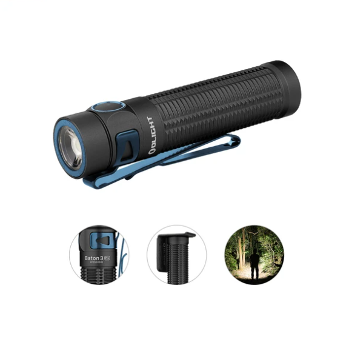
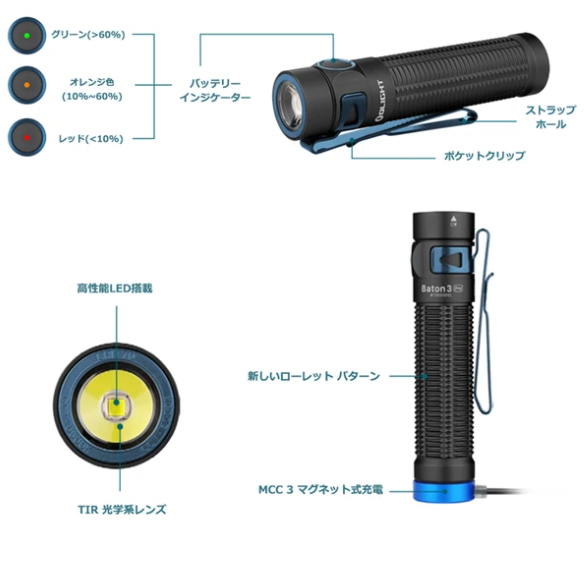
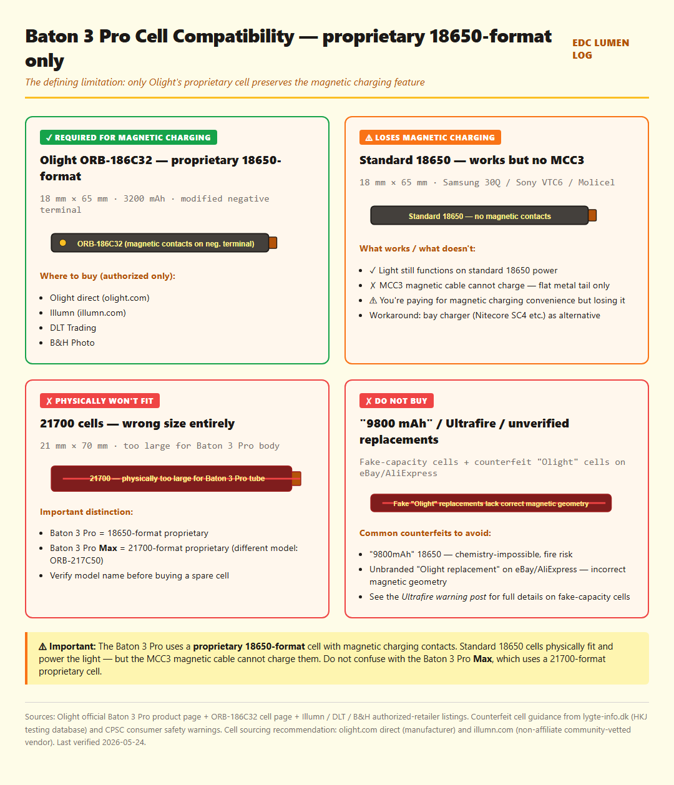
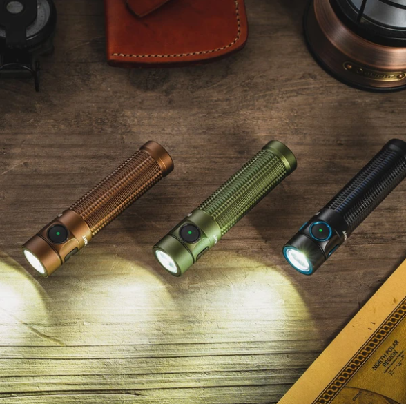
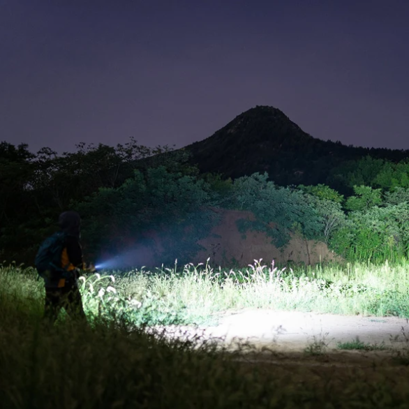
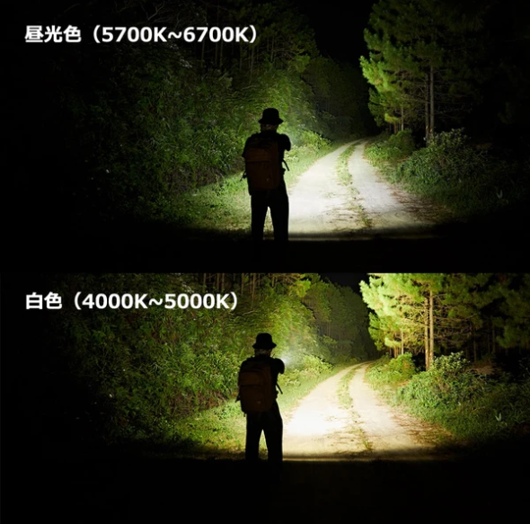
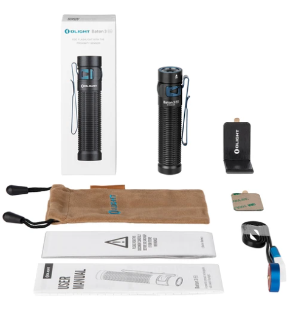

Olight Baton 3 Pro Review — Magnetic Charging for People Who Don't Want to Think About Flashlights
A premium EDC where the spec sheet matches reality — but the cell is a closed ecosystem.

Image: Olight Baton 3 Pro manufacturer hero composite via Olight official Baton 3 Pro product page (manufacturer marketing graphic, captured for local hosting). Cropped/sized for review use under fair-use review/commentary.
Affiliate disclosure: As an Amazon Associate I earn from qualifying purchases. The Buy links at the bottom of this review are Amazon product links — once the Amazon Associates application for this site is approved, an affiliate tag will be inserted into each link. This review is not sponsored.
TL;DR
Verdict: Community consensus pick for "best EDC flashlight for someone who doesn't want to think about their flashlight." Simple UI + magnetic charging + accurate specs + Olight warranty. 1Lumen's testing found the 1500 lumen claim spot-on — rare at any price tier.
Best for: Daily pocket EDC where charging convenience matters more than cell flexibility. Also consistently the top gift recommendation in r/flashlight threads.
Skip if: You want cell independence (proprietary 18650-format cell with magnetic charging contacts — standard 18650s lose the magnetic charging function), Anduril 2 configurability, or high-CRI tint (measured 64-65 CRI with documented green shift on low modes).
What you need to buy together: Nothing — the proprietary cell is included and pre-installed. Buy a spare directly from Olight or authorized dealers if you want backup. Do not attempt to substitute generic cells if you want magnetic charging to keep working.
Cell included and pre-installed. Standard 18650 cells physically fit but lose magnetic charging — the proprietary cell has modified negative terminal contacts for the MCC3 magnetic cable. Do NOT confuse with the Baton 3 Pro Max, which uses a 21700-format proprietary cell (different model entirely).
IP rating
IPX8
2m submersion, 30 min.
Weight (with cell)
103 g / 3.63 oz
Genuinely slim 18650 EDC class. The 23 mm body diameter doesn't bulge through fabric.
Length × diameter
101.4 × 23 mm
One of the shortest 18650-class lights on the market. Compact carry confirmed across community reports.
Charging
Magnetic MCC3 cable (tail-mounted) — no USB port on body
~3.5 hours to full from empty at 5V/2A. Cable is included. Lose the cable and you charge via a bay charger or buy a replacement MCC3.
UI
Olight proprietary (NOT Anduril)
Single-click on/off, hold to ramp, double-click for turbo. 5 brightness levels + strobe. Simple, regulated, intuitive — but no Anduril-style configurability.
Proximity sensor
Yes — auto-reduces output in Turbo/High when object detected near head
Double-click within 5 seconds to override. Some users find this protective; others find it intrusive.
CRI
~70 (claimed)
Independent measurements come in at 64-65 CRI across Neutral White and Cool White variants. Both show positive Duv (green tint) on low modes — XHP70.2 / SST-40-W emitter characteristic, undisclosed by Olight in official materials.
Warranty
5-year international / lifetime for US purchases from 2023+
Industry-leading. Frequently cited by community as a confidence factor for premium pricing.
Price
Check current price at the regional Amazon links in the "Where to buy" section below
Per Amazon Associates Program policy, on-site pricing is sourced via Amazon's PA-API only — static prices are not displayed here.

Olight's own feature-callout infographic (Japanese annotations from Olight Japan store page) detailing the Baton 3 Pro's key components: tri-color battery indicator (green / orange / red states), TIR optic, knurling pattern, MCC3 magnetic charging tail. Image: Olight manufacturer marketing infographic via Olight official Baton 3 Pro product page. Cropped/sized for review use under fair-use review/commentary.

Site-generated infographic (HTML→PNG, EDC Lumen Log original). The Baton 3 Pro takes a proprietary 18650-format cell with magnetic charging contacts. Standard 18650 cells (Samsung 30Q, Sony VTC6) physically fit and power the light — but they lack the magnetic contacts, so charging via the MCC3 cable stops working. Only Olight's ORB-186C32 (or authorized retailer equivalents) preserves the magnetic-charging feature. Do not confuse with the Baton 3 Pro Max, which uses a 21700-format proprietary cell (ORB-217C50) — completely different physical size. Cell-spec data sources: Olight manufacturer page + Illumn / DLT / B&H authorized-retailer listings.
4-axis rating
Build
5/5
Olight's machining tolerances are tight and consistent across colorways. Anodizing is smooth, pocket clip holds position reliably, magnetic contact retains alignment after hundreds of charge cycles per community long-term reports.
Runtime
4/5
Regulated output holds claimed values: 120 lm for 17 hours, 15 lm for 100 hours, moonlight 0.5 lm for 120 days. Turbo steps down from 1500 to 600 lm within 2 minutes by design — for sustained high output, 21700 lights are better.
Pocketability
5/5
23 mm body diameter, 101 mm length, 103 g with cell. Genuinely slim. The included reversible clip works well in jeans front pocket carry. Magnetic charging means no port flap, no USB cable hunting.
Value
3/5
You pay a meaningful premium over budget alternatives (SC31 Pro at half the price gets you slightly higher specs but no magnetic charging). The 5-year warranty + Olight's brand reliability offsets the price gap for buyers who value those.
Magnetic charging actually changes the daily workflow: Drop the light on the tail-cap cable, it sticks, it charges. No port hunting, no flap flipping, no precise USB-C alignment. Community long-term reports consistently rank this as the #1 reason buyers keep this light over alternatives.
Simple UI that anyone can use immediately: Single-click on, double-click for turbo, hold to ramp. No Anduril learning curve. Community members who find Anduril 2 off-putting consistently recommend this as the alternative.
Spec-accurate output: 1Lumen confirmed the 1500 lm claim accurate at start; throw within margin of 175 m claim; runtime claims held at low and medium modes. In a segment full of inflated specs (see the IF25A's 420 m throw claim measuring 245-315 m), the Baton 3 Pro is the rare honest spec sheet.
Olight's 5-year warranty (lifetime in US): Industry-leading. Frequently cited as the confidence factor that justifies the premium pricing.
Build quality and color/edition variety: Tight tolerances, smooth anodizing, no machining defects. The proliferation of color variants (copper, skeleton, limited editions) creates a small collector market segment.
✗ Where it falls short
Proprietary cell = closed ecosystem: This is the most discussed criticism community-wide. Replacement cells must come from Olight or authorized retailers — standard 18650s physically fit but lose magnetic charging. Buyers with strong opinions on cell independence consider this a deal-breaker. Defenders counter that Olight's cells last hundreds of cycles and replacements are widely available.
Green tint on low modes (undisclosed): Every independent reviewer found positive Duv on lower brightness levels — typical SST-40-W / XHP70.2 characteristic. ZeroAir noted: "The main issue with this emitter is that it's green, which is more noticeable on the low modes." Olight doesn't disclose this anywhere in official materials. Measured CRI is 64-65 vs the claimed 70.
No Anduril, no user-configurable UI: Simple is a feature for casual users and a limitation for enthusiasts. No ramping configuration, no floor/ceiling adjustment, no firmware flashing path. The proximity sensor can also feel intrusive (double-click overrides it, but it triggers automatically near surfaces).
Proprietary charging cable is a single point of failure: Lose the MCC3 cable, lose the convenience advantage. Bay charger still works as backup, but defeats the "grab and go" premise. Community advice: keep the cable permanently attached to a USB brick, not the light.

Image: Olight Baton 3 Pro three-colorway lifestyle photo (copper, olive, black on wood with leather accessories) via Olight official Baton 3 Pro product page. Cropped/sized for review use under fair-use review/commentary.
"Every long-term Baton 3 Pro carry report I've seen says the same thing: you drop it on the cable, it sticks, it charges. That's it. No port hunting, no alignment fussiness."

Image: Olight Baton 3 Pro outdoor beam-reach marketing photo (hiker silhouette in field pointing at distant mountain) via Olight official Baton 3 Pro product page. Cropped/sized for review use under fair-use review/commentary.
★ Community-tracked use report
📅 Long-term Baton 3 Pro patterns from 1Lumen, ZeroAir, BLF, and CPF
Daily carry placement: Community reports consistently describe the Baton 3 Pro in jeans front pocket carry with the included reversible clip. 23 mm body slips into a standard EDC slot without bulge.
Magnetic contact durability: Long-term reports across BLF and CPF show no widespread degradation of the tail-cap magnetic contacts after hundreds of charge cycles. The contacts retain alignment reliably; no community-documented patterns of failure.
Anodizing wear: Olight's hard anodizing is consistently described as tight and durable. Light-clip contact wear is documented after extended carry — typical for any EDC light, no Olight-specific issue.
Cell behavior: The proprietary ORB-186C32 holds capacity through repeated charging per long-term reports. The 0.5 lm moonlight mode 120-day claim is supported by CPF and Olight community testing. Charging via MCC3 at 5V/2A completes in ~3.5 hours from empty.
Proximity sensor in practice: Community is split. Some users describe it as protective (prevents hot-head incidents when light is dropped face-down in a pocket); others find it intrusive in real use cases (lighting up a tent corner, the sensor drops output unexpectedly). Double-click within 5 seconds overrides — but you have to remember to do it.
Compared to standard-cell alternatives: The Skilhunt M200 V3 is the community's go-to "magnetic charging with standard 18650" alternative; the SC31 Pro is the "no magnetic charging but cheaper Anduril 2" alternative. Where the Baton 3 Pro wins is the simple UI, build refinement, and brand warranty — none of which the M200 V3 or SC31 Pro match.

Image: Olight Baton 3 Pro side-by-side beam tint comparison — cool white (5700-6700K) vs neutral white (4000-5000K) variants — via Olight official Baton 3 Pro product page. Cropped/sized for review use under fair-use review/commentary.
Verdict
The Olight Baton 3 Pro is the community's honest answer to a question many EDC reviews never directly address: what's the best flashlight for someone who doesn't want to think about their flashlight? The proprietary-cell debate is overfocused in enthusiast reviews; the actual value proposition is genuinely strong for its target user. Simple UI, magnetic charging, accurate lumen specs, slim body, Olight warranty. If those match what you want, this is the light. If you want cell independence with magnetic charging, look at the Skilhunt M200 V3. If you want Anduril 2 + USB-C onboard charging at lower cost, look at the Sofirn SC31 Pro. If you want the brightest 18650 in this size class, the FC13 has more lumens but worse build refinement.

Image: Olight Baton 3 Pro package contents (retail box, light, MCC3 magnetic charging cable, storage pouch, user manual, lanyard, adhesive mount pad) via Olight official Baton 3 Pro product page. Cropped/sized for review use under fair-use review/commentary.
🛒 Where to buy
If the verdict resonated and you want to pick one up, here are the regional Amazon product links. Choose your region. Once the Amazon Associates application for this site is approved, the URLs will be updated to include an affiliate tag.
🇺🇸 Check current price on Amazon.com (US)(Amazon search link — colorway varies; affiliate tag pending approval) Cell (proprietary 18650-format) included. Choose colorway / tint variant. US purchases qualify for Olight lifetime warranty (2023+ policy).
Spare proprietary cell sourcing: Buy the Olight ORB-186C32 (3200 mAh, 18650-format with magnetic contacts) only from Olight directly, Illumn, B&H Photo, or DLT Trading. Avoid unverified "replacement" cells on eBay/AliExpress — they may lack the correct magnetic contact geometry. Do NOT use 21700 cells — they won't fit (the Baton 3 Pro is 18650-format; the Baton 3 Pro Max is the 21700 model). Avoid uncategorized "9800 mAh" cells — see the Ultrafire warning post.
If you need standard-cell magnetic charging: Look at the Skilhunt M200 V3 — magnetic charging with any standard 18650, noticeably less than the Baton 3 Pro.
Affiliate disclosure: The Amazon links above are currently non-affiliate search links (Olight colorway varies by listing; product links are inserted once the Amazon Associates application is approved). If/when you buy through an affiliate-tagged link, EDC Lumen Log earns a small commission at no extra cost to you. As an Amazon Associate I earn from qualifying purchases (statement preserved as required by Amazon Program Policies for the participation framework). Reviews are not paid or sponsored — see Methodology. (PR — 景品表示法準拠 / アフィリエイトタグは承認後に挿入)